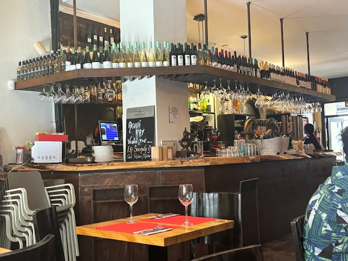

En La Tintorería, entendemos que la calidad de un vino reside en su cuidado. Nuestra bodega ha sido meticulosamente diseñada para asegurar la temperatura, humedad y oscuridad perfectas para cada botella.
Nos preocupamos por el tratamiento de nuestros productos: desde la selección inicial hasta el momento en que la copa llega a su mesa, garantizando que cada caldo exprese su carácter y plenitud.
